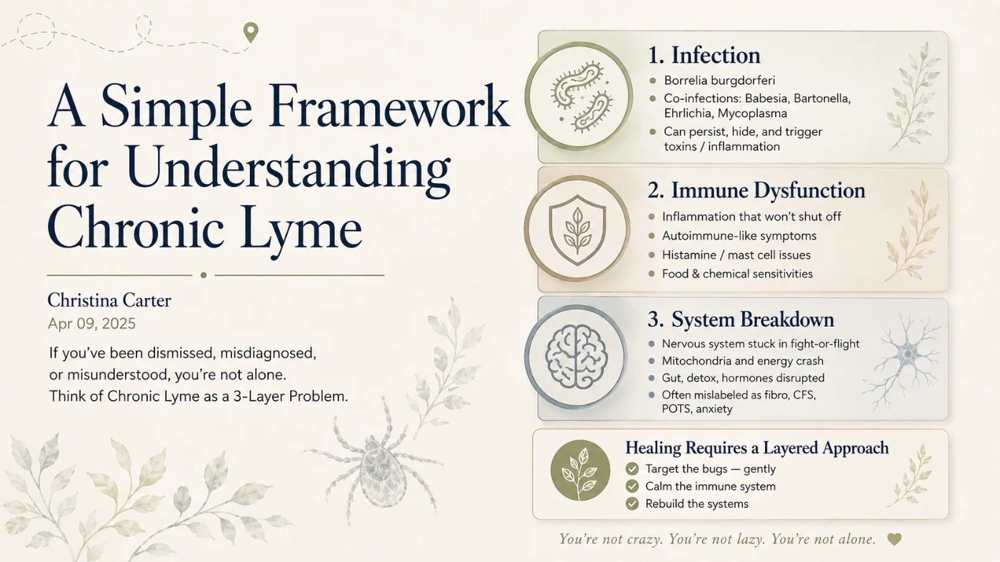

What Is Chronic Lyme? A Simple 3-Layer Framework
Crushing fatigue, migrating pain, brain fog, mood swings, and a maddening cycle of better… worse… better… worse. If you've been dismissed, misdiagnosed, or misunderstood, you're not alone — and there's a way to make sense of it. Think of chronic Lyme as a 3-layer problem.

Millions of people are living with symptoms that don't make sense on paper — but feel very real in the body. Crushing fatigue, migrating pain, brain fog, mood swings, and a frustrating cycle of "better… worse… better… worse."
And somewhere in the background of all this? A tick bite. Or maybe no bite at all — just the lingering question: Could this be Lyme?
Welcome to the confusing world of chronic Lyme disease — a term that sparks debate in the medical world, but describes a very real experience for those living it. We need a better way to understand it. Here's a simple framework.
Quick answer
What is chronic Lyme disease?
Chronic Lyme describes the very real, ongoing illness many people experience long after a tick-borne infection — even when standard treatment is considered complete. A helpful way to understand it is as a three-layer problem: (1) infection from Borrelia and common co-infections, (2) immune dysfunction where the immune system stays inflamed and confused, and (3) whole-body system breakdown affecting the nervous system, mitochondria, gut, liver, and hormones. It is not just an infection; it is a total-body systems crash triggered by infection and sustained by immune confusion, stress, toxins, and time.
Key Takeaways
- Think of chronic Lyme as a 3-layer problem: infection, immune dysfunction, and system breakdown.
- The maddening better-worse-better cycle makes sense once you see the layers.
- It’s hard to get help because most care targets only one layer.
- Healing has to be layered too — addressing all three, in order.
- You’re not alone or imagining it — a framework turns chaos into a plan.
Think of chronic Lyme as a 3-layer problem
Infection
The first layer is the easiest to understand — and the most widely accepted: Borrelia burgdorferi, the bacteria that causes Lyme disease. It's often joined by co-infections like Babesia, Bartonella, Ehrlichia, or Mycoplasma.
In the early stages, Lyme can often be treated with antibiotics. But if the infection goes undiagnosed — or if it's complicated by co-infections — it can persist and cause long-term symptoms.
In some cases, the bugs go stealth. They hide in biofilms, change forms, and evade the immune system. This is why some people feel worse after treatment: killing the bugs can release toxins and trigger inflammation. (That's the Herxheimer reaction.)
Immune dysfunction
Over time, the immune system gets confused. It's like a dog that used to bark at intruders, now barking at the mailman, the neighbors, and the wind. This leads to:
- Inflammation that won't shut off
- Autoimmune-like symptoms
- Histamine and mast cell issues
- Food and chemical sensitivities
Your immune system becomes a broken alarm system — overreacting to everything and underreacting to real threats. (This is exactly the layer that Treg therapy is designed to address.)
System breakdown
Now layer in the final piece: your body's systems start to break down.
- The nervous system gets stuck in fight-or-flight.
- The mitochondria (your energy factories) run out of fuel.
- The gut becomes leaky and inflamed.
- The liver and detox pathways get clogged.
- The hormones crash.
This is why so many people with chronic Lyme get labeled with other diagnoses like fibromyalgia, chronic fatigue syndrome, POTS, mold illness, or depression and anxiety.
But the root cause is deeper. Chronic Lyme is not just "an infection." It's a total-body systems crash — triggered by infection, sustained by immune confusion, and worsened by stress, toxins, trauma, and time.
Why it's so hard to get help
One of the most frustrating parts of living with chronic Lyme isn't just the symptoms — it's the medical gaslighting.
The CDC and Infectious Diseases Society of America (IDSA) don't formally recognize "chronic Lyme" as a real diagnosis. Instead, they refer to something called Post-Treatment Lyme Disease Syndrome (PTLDS) — a vague term that often leaves patients stranded without meaningful treatment. Many doctors follow these outdated guidelines, which means they may offer a few weeks of antibiotics and then suggest it's "all in your head" when symptoms persist.
This medical blind spot creates a devastating gap. Insurance won't cover long-term treatment. Lyme-literate doctors operate outside the system and often require out-of-pocket payment. Patients are forced to become their own researchers, advocates, and care coordinators — while already exhausted and sick. It's not just a health crisis; it's a systemic failure. (If you're at this stage, my guide to finding a Lyme-literate doctor may help.)
Healing requires a layered approach
The same way the illness unfolds in layers, healing must be layered too.
- Target the bugs, but gently — herxing is not healing.
- Calm the immune system — think anti-inflammatory support and nervous-system regulation.
- Rebuild the systems — restore energy, gut health, sleep, detox, and hormones.
You don't fix chronic Lyme with a one-size-fits-all antibiotic. You fix it with a sequence, a strategy, and support. (See the full chronic Lyme treatment options guide for what that can look like.)
The bottom line
Chronic Lyme is real. It's complex. And it's survivable.
If you're sick and tired of being sick and tired — and no one has given you a framework that makes sense — remember this:
You're not lazy.
You're not alone.
You're fighting a multi-layered illness that requires a multi-layered solution. Keep going. Healing isn't linear — but it is possible.
Want help making sense of your layers? Talk with me — free →
Chronic Lyme, Explained
A very real, ongoing illness many people experience long after a tick-borne infection — even when standard treatment is "done." Understand it as a three-layer problem: infection, immune dysfunction, and whole-body system breakdown. It's not just an infection; it's a total-body systems crash triggered by infection and sustained by immune confusion, stress, toxins, and time.
For those living it, absolutely — even though the term is debated. The CDC and IDSA don't formally recognize "chronic Lyme" and instead use "Post-Treatment Lyme Disease Syndrome" (PTLDS), a gap that leaves many patients dismissed and without meaningful treatment.
PTLDS is the mainstream term for lingering symptoms after standard treatment — often vague, with little ongoing care. "Chronic Lyme" is the patient-community term for the same lived experience, understood as a layered illness (persistent infection + immune dysfunction + system breakdown) rather than a single finished infection.
Because the "system breakdown" layer mimics other conditions, people get labeled with fibromyalgia, chronic fatigue syndrome, POTS, mold illness, depression, or anxiety — capturing the surface while missing the root. Standard testing also misses many cases.
Layer the healing: target the infection gently (herxing isn't healing), calm the immune system, and rebuild the body's systems — energy, gut, sleep, detox, hormones. A sequence and a strategy with support, guided by a Lyme-literate practitioner — not a one-size-fits-all antibiotic course.
References & further reading
- Centers for Disease Control and Prevention (CDC) — Lyme Disease. cdc.gov/lyme
- International Lyme and Associated Diseases Society (ILADS) — evidence-based guidelines and research. ilads.org
- MedlinePlus (U.S. National Library of Medicine, NIH) — Lyme Disease. medlineplus.gov
- Johns Hopkins Lyme Disease Research Center. hopkinslyme.org
Medical disclaimer: This article is for educational purposes only and reflects personal experience and general information. It is not medical advice, diagnosis, or treatment, and it does not replace consultation with a qualified healthcare professional. Christina Carter is a patient advocate and educator, not a licensed medical provider. Always consult a qualified, Lyme-literate clinician about your care, and never delay or disregard professional medical advice because of something you read here.